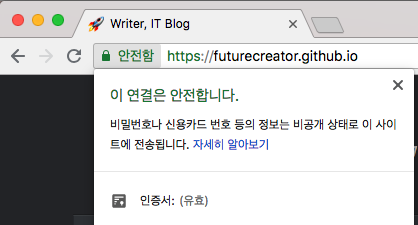
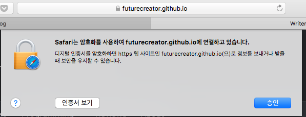
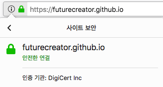

Hexo 블로그에 HTTPS 적용하는 포스트를 작성하려다가 보니 먼저 HTTPS를 정리하는게 좋을 것 같습니다. 이번 포스트에서는 HTTPS의 원리에 대해 알아보겠습니다.
HTTPS
HTTP(Hypertext Transfer Protocol) 은 HTML 을 주고받을 때 서로 지키기로 정한 규칙입니다. 그리고 HTTPS(HTTP Secure) 는 HTTP 의 보안을 강화한 것으로, 암호화된 연결로 웹 서버와 통신하는 방식입니다. HTTP 는 서버와 클라이언트가 주고 받는 메시지가 노출되어 가로채거나 위조될 위험이 있습니다. 따라서 비밀번호, 계좌번호 등 중요한 정보를 전송할 때는 HTTPS 를 이용하게 됩니다.
HTTPS 를 사용하게 되면 브라우저마다 조금씩 다르지만 초록색과 자물쇠 표시를 이용해서 안전하게 연결된 사이트라는 걸 알려줍니다. 이는 스니핑, 피싱, 데이터변조 등으로부터 안전하다는 것을 의미하고, 방문자나 서비스 사용자에게 신뢰감을 줄 수 있습니다.[1]



HTTPS는 SSL(Secure Socket Layer) 라는 기술을 이용합니다. 이는 IETF(국제 인터넷 표준화 기구)에서 표준화하면서 이름이 바뀌어 TLS(Transport Layer Security)라고도 부릅니다. 개인키(Private Key)와 공개키(Public Key)를 복합적으로 사용하고, 인증기관(Certificate Authority, CA)이라는 제3자를 이용해 보안을 강화하고 전송되는 데이터를 암호화합니다. SSL 에서 사용하는 개념들을 간단하게 살펴보겠습니다.
암호화 Encryption
중요한 정보가 있습니다. 이 정보를 허락된 사람들만 볼 수 있도록 하기 위해, 알고리즘을 이용해 정보를 암호문으로 바꿀 수 있습니다. 이를 암호화(Encryption)이라고 하고 암호화된 정보는 복호화(Decryption) 과정을 통해 해독할 수 있습니다. 이런 암호화/복호화 과정에서 비밀번호와 비슷한 기능을 하는 것을 키(Key)라고 합니다.
웹 사이트를 통해서 민감한 정보를 주고받을 때 필요합니다. 주로 다음과 같은 정보를 다룰 때 사용됩니다.[2]
- 로그인 및 암호
- 금융 정보 (은행계좌, 신용카드 번호, 보안카드 번호 등)
- 독점적인 정보
- 법률 문서 및 계약서
- 고객 목록
- 의료 기록
대칭키 The Symmetric Key


암호화 방식에서 가장 쉽게 생각해볼 수 있는 방법은 암호화할 때 사용한 키를 복호화할 때도 그대로 사용하는 것입니다. 즉 정보 A 를 암호화한 후에 정보를 전달하고, 암호화에 사용한 키도 전달하는 겁니다. 이런 방식을 ‘대칭키’ 방식이라고 합니다. 간단한 방법이지만 이 키를 전달하는 것 자체도 위험한 과정입니다. 키가 유출되기 쉽기 때문에 안전한 방법이 아닙니다.
비밀키와 공개키 Private Key & Public Key

대칭키처럼 동일한 키를 사용하는 대신, 다른 두 개의 키를 사용하는 것을 '비대칭키(Asymmetric Key)'라고 합니다. 하나의 키로 암호화를 시키면 다른 하나의 키로 풀 수 있도록 합니다. 비밀키/공개키(Private Key/Public Key) 방식은 이런 키 쌍(Key pair)를 관리하는 방식입니다.

비밀키는 안전하게 보관된 키고, 공개키는 다른 사람들이 볼 수 있도록 공개된 키입니다. 공개키를 이용해서 암호화하면, 비밀키를 가진 사람만이 이 정보를 복호화할 수 있게 됩니다.

그렇다면 반대로 비밀키로 정보를 암호화한다면 어떨까요? 물론 공개키를 가진 사람이 풀 수 있습니다. 하지만 공개키는 말 그대로 공개되었기 때문에 마음 먹으면 누구나 풀 수 있게 됩니다.
이런 방식은 쓸데없어 보이지만 유용하게 사용될 수 있습니다. A 라는 사람이 비밀키/공개키 쌍을 생성한 후에 공개키를 B 라는 사람에게 보냅니다. 그럼 A 라는 사람이 본인만이 가지고 있는 비밀키로 암호화된 정보를 보냈을 때, B 가 공개키로 풀 수 있겠죠. 즉, B 가 공개키로 풀 수 있다면 A 가 짝이 맞는 비밀키를 가지고 있다는 것을 증명하게 됩니다. 이렇게 암호화를 이용해 신원을 증명할 수 있는 방식을 '전자서명(digital signature)'이라고 합니다.[3]
SSL 인증서 DIgital Certificate
인증서를 통한 보안 방식에는 다음과 같은 세 가지 역할자가 등장합니다.
- 클라이언트 : 사용자
- 서버 : 서비스 제공자
- CA : Certificate Authorities 인증 기관
신원 확인
SSL 방식에서 핵심 역할을 하는 것이 SSL 인증서(혹은 디지털 인증서) 입니다. 이러한 인증서는 사용자(클라이언트)가 접속한 서버가 애초에 의도한 서버가 맞는 것인지를 보장해줍니다. 인터넷뱅킹 사이트에 접속했다면 이게 정말 그 인터넷뱅킹이 맞는지, 가짜사이트는 아닌지 확인해줍니다. 즉, 웹 사이트의 신원을 확인해주는 역할을 합니다.
이러한 인증서는 신뢰성을 공인받은 기업에서 구입할 수 있습니다. 이런 기업을 CA(Certificate Authorities)라고 합니다. CA는 인증서 신청을 받아서 검증하고 인증서를 발급해줍니다. 돈을 내고 안전한 사이트라고 보장하는 인증서를 사는 것이죠. CA는 안전한 사이트라는 것을 확인하고 공인된 인증서를 자신의 비밀키로 암호화해서 줍니다. 이제 인증을 받은 회사는 사용자가 서버에 접속할 때 인증서를 보냅니다.
인증서는 클라이언트가 서버에 접속할 때 다운로드 됩니다. 그리고 브라우저에는 신뢰할 수 있는 CA 목록과 CA의 공개키를 가지고 있습니다. 브라우저가 해당 서버의 인증서를 받아서 CA의 공개키로 복호화 할 것이고, 만약 풀린다면 CA의 인증을 제대로 받은 안전한 사이트임을 확인할 수 있습니다. 위에서 살펴 본 전자서명 방식을 생각하시면 됩니다.

따라서 제대로 된 인증서를 가진 사이트에 접속하면 HTTPS와 함께 초록색 혹은 자물쇠로 연결을 표시하지만, CA가 아닌 곳에서 인증을 받았다면 HTTPS 연결이라도 브라우저에서 경고 메시지를 보여줍니다.
동작 방식
먼저 서버가 신뢰할 수 있는 사이트라는 것을 확인한 클라이언트는 서버와의 핸드쉐이크 단계에서 주고 받은 랜덤 데이터를 이용해 키를 하나 만듭니다. 이 키를 이용해서 대칭키 방식으로 암호화된 정보를 주고받으려고 합니다. 문제는 이 대칭키를 그냥 보내면 위험하다는 거죠.
인증서 안에는 해당 신청한 서비스의 정보와 서버의 공개키가 들어있습니다.[4] 대칭키를 서버에 안전하게 전송할 방법은 바로 이 서버의 공개키를 이용한 방법입니다. 생성한 대칭키를 서버의 공개키로 암호화한 후 서버에 보내면, 비밀키를 가진 서버만 대칭키를 복호화할 수 있습니다. 이렇게 대칭키를 교환했다면 준비는 끝났습니다. 대칭키의 경우 간단하지만 대칭키 자체를 주고받는 것이 문제였는데 해결되었네요.
대칭키를 이용해서 정보를 교환하고, 사용된 대칭키는 SSL 접속이 끝나면 폐기됩니다.
정리
이번 포스팅에서는 HTTPS 에 대해서 살펴봤습니다. 마지막으로 큰 줄기만 정리해보겠습니다.
- 중요한 정보는 암호화가 필요해서 SSL이 적용된 HTTPS 를 사용해야 한다.
- CA는 서버를 인증하고 인증서를 발급한다.
- 서버는 인증서에 서비스의 정보와 서버의 공개키를 저장해 제공한다.
- 클라이언트는 인증서를 통해 서버가 신뢰할 수 있는지 확인할 수 있고,
- 인증서에 있는 공개키를 이용해 서버와 대칭키를 교환할 수 있다.